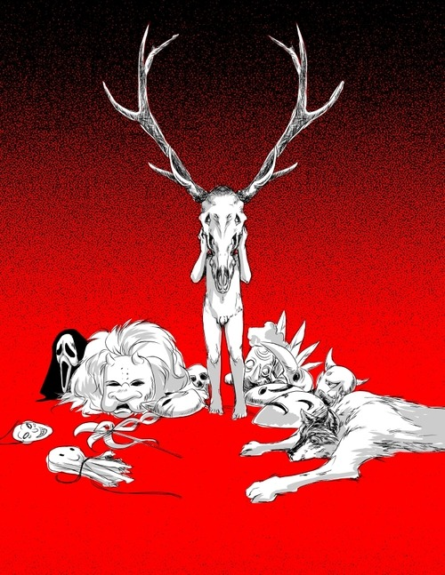
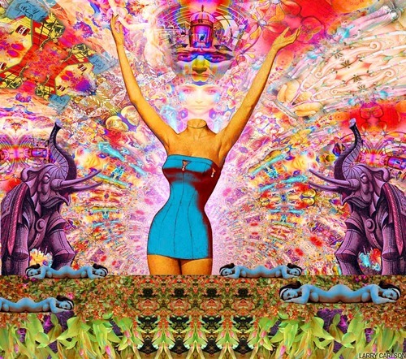
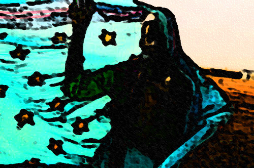

|

Desde que era un chaval de 13 años he creado mis propios dioses y mis propios mundos. Comencé con un dios en forma de serpiente alada, inspiración de un conocido juego de rol; más tarde la inspiración fue el Silmarillion de Tolkien y esos Valars de reminiscencia nórdica, pero aquello me duro más bien poco: descubrí la magia del caos. Y sobre todo, se puso en mi camino Eris, esa maldita zorra que teje realidades alternativas a medida que caes por la madriguera del conejo blanco
En definitiva, siempre me ha gustado enfrentarme a la vida con cierto respaldo. La canción “With a little help from my friends” de Joe Cocker siempre me viene a la cabeza cuando pienso en todo esto.
Para mí no es una obediencia a algo superior, no es profesar un culto más o menos estable o controlado. No, es algo distinto, más visceral. Es lo que mi “yo-ateo” llama tener amigos imaginarios.
En mi modo de ver la magia, cuando necesitas esa pequeña ayuda para equilibrar tu lado de la balanza, una gran deidad a menudo no te ayudará, esos son más de abrirte el camino, de plantearte la búsqueda. Lo que necesitas para sortear obstáculos, para inspirarte y para cuidarte las espaldas son amigos, y sin han sido paridos de tu propia imaginación mejor, nadie como ellos saben como ayudarte a saltar tus propios agujeros y muros.
Si, ya lo sé… muchos de los practicantes pensareis “pero una deidad con cientos o miles de años de existencia, de cultos y rituales tendrán más fuerza, más poder”.
Yo digo: son partes de mí, todas ellas… tanto las que estudio y adopto, como las que paro de mi propia imaginación.
Si bien es cierto que mis dos deidades favoritas, y que más ayudas me han dado son figuras adoptadas, son deidades bastante especiales:
Como ya comentaba al principio soy, y he, sido un gran devoto de Eris, de hecho, desde hace ya mucho tiempo, la considero como una hermana.
No solo me gusta por lo que representa (al menos para mí): es una fuente de inspiración, como una musa. Es una tejedora de realidades. Y un espíritu caótico, en cuanto a que habita en lo profundo de la vida, tanto en el que nos rodea como en la que nos mueve desde dentro (de todo esto podría hablar en otro artículo).
Lo que más me gusta de Eris es que es el Discordianismo ha cogido a una deidad bastante poco conocida y ha ido más allá de devolverla del olvido de los dioses, la ha modernizado y la ha otorgado de una personalidad punk.
Es fácil trabajar con ella, es divertida, su arquetipo jungiano de Trickster viene de perlas cuando te intentas escabullir de la realidad que tienes atándote durante las primeras fases de cualquier trabajo mágico e iniciático. Y sobre todo, Eris es fácil de personalizar y de tomar como propia, dotándola de algunas características más personales, en mi caso, es parte de mi propio sistema panteísta, y funciona como enviada y a la vez puente de una figura mayor, creada por mi mismo, de la que hablaré más adelante: la Santa Madre del Caos Perpetuo.
Mi otra deidad favorita es Ganesha. En este caso la deidad está digamos, más cerrada en cuanto a dotarla de personalidad por el mago. Pero lo que me atrae y me resulta práctico de él, es que su culto no está regularizado.
Ganesha me parece una deidad muy interesante y que puede ser arrancada de su panteón y que sigue poseyendo aún así esa fuerza mística y exótica original.
Le debo bastantes cosas, podría decir que incluso mi vida, ya que me ha protegido en algunos viajes, de hecho, le atribuyo haber ayudado a encontrar y solucionar a tiempo dos averías muy peligrosas de coche en viajes largos. También le debo conseguirme plaza en los estudios que quería realizar en el sitio adecuado que había elegido por medio de un misterioso problema informático que me dio ventaja frente a otros alumnos que estaban en las listas. Lo único que suele pedir a cambio es la devoción diaria a alguna representación suya durante el tiempo adecuado, y como recompensa de su trabajo, que su representación sea aumentada en tamaño/calidad o se cumplan alguna promesa que se haya dispuesto para el trabajo en su nombre.

Retomando la idea de las deidades creadas por uno mismo. Si bien estas pueden llegar a tener menos poder, y me refiero a poder de invocación, al menos desde mi punto de vista. Y es normal, es una ventaja trabajar con una deidad que ya tiene una personalidad mejor o peor definida, con unas invocaciones que se llevan realizando tiempo, con una imagen concreta, que nos ayuda a poder materializarlas mejor.
Pero si partimos de la idea que expone Phil Hine, en su texto “Cómo Hablar con los Dioses”, de que los dioses son sigiles, es decir representaciones de cualidades e ideas, las deidades ya establecidas tienen solo la ventaja que antes comentaba, que esa representación ya está bastante bien trazada, que además, al haber tenido tiempo de culto, esas deidades no son meras representaciones, tienen una personalidad propia y en la mayoría se mezclan diferentes representaciones de ideas y conceptos; y esto es algo que puede llegar a ser una traba para el mago al tenerse que acomodar a la entidad y no al revés.
En cambio, si la deidad sale del mago mismo; si este le dota de personalidad, que además ampliará ella misma con el tiempo y su “uso”; si la crea acorde a lo que necesita.: creo que el mago puede llegar antes a adquirir ciertas experiencias y conocimientos, con un poco de ayuda puede cumplir sus objetivos.
Por supuesto, es mi opinión, basada en mi propia experiencia, surgida de mis ideas y educación, este texto no pretende ser ningún tipo de lección, sino más bien un intercambio de ideas de forma unidireccional.
Para entenderme mejor, debería explicar brevemente mis ideas de cómo funciona la magia, o que es con lo que trabajo yo:
-Las palabras no son importantes por si mismas, su poder viene de los sentimientos y emociones que generan.
-Las deidades tienen fuerza en cuanto tú te conviertes en ellas y adquieres sus características, no puedes dejarlas a ellas solas, no son tus mayordomos.
-Las deidades más útiles para el mago son las que simbolicen mejor el aspecto con el que desea trabajar o pretende potenciar en si mismo.
-Si el mago decide rendir culto o estudiar mejor una deidad compleja, como podría ser Odín, que tiene muchas “caras”, debe de pasar de ser un mago a un explorador y un peregrino.
-En la exploración y el peregrinaje el mago encuentra la “delicatessen” de la experiencia iniciática.
-Si esa experiencia es otorgada por algo con rostro difuso y rasgadas vestiduras, la experiencia tiende a ser más fuerte, más visceral, más profunda y de un misterio desconocido que acaba traspasando al peregrino y marcándole de una manera muy especial.

La Santa Madre del Caos Perpetuo:
Creé a esta deidad como un amasijo de otras muchas deidades, todas ellas grandes diosas. Pero no es solo una Gran Madre para mí, una Nuit personal. De hecho está más próxima al Tao, por las experiencias que he acabado teniendo después de haberla rendido culto y haber realizado trabajos devocionales; alejándose de la diosa madre que comenzó inspirada en algunas corrientes neopaganas.
En cuanto a imagen es cercana a la idea de la triple diosa. El culto que llevé a cabo era alabándola como fuente de inspiración y creadora/destructora de caminos.
Pero acabó siendo algo más allá de todo aquello, acabo siendo el Caos que abitaba en su útero, que se abrió frente a mí y me dio una llama especial.
Acabó siendo la Reina de los Cielos, inspiración en si misma. Poesía y Arte en estado puro.
Se convirtió en el Espíritu del Valle del Tao te King, una fuente mistérica.
Es el altar que permanece en la Peligrosa Capilla.
Habita en el profundo Tártaro y a la vez ilumina las bucólicas Llanuras Eliseanas.
Puedes pensar que me tope en el fondo con algo que está por detrás de toda deidad, y acertarás, al igual que si opinas que construí lo que necesitaba en ese momento.
Es lo mismo, construí un puente. Lo importante acaba siendo lo que aprendes con tu experiencia, no tanto si la deidad es más o menos profunda o misteriosa, o tu creación es más ingeniosa.
Como colofón voy a dar algunos consejos para quién este interesado en crearse su propia deidad:
1. Medita y piensa a cerca de tu trabajo o para que necesitas una deidad.
2. Planifica en mayor o en menor medida las características y personalidad que tendrá, pero recuerda que seguramente evolucionará ella solita. Los epítetos que puedas crear para ella te ayudan a dejar claro sus atributos y diferentes caras/personalidades.
3. Idea también la forma de culto.
4. Busca imágenes que te puedan servir para llegar hasta ella.
5. Escribe sobre ella. En mi caso me ayuda escribir poemas y odas que adquieren muchísima fuerza en los rituales, llegando a sobrepasar en importancia al ritual en sí; debe ser igual de especial tanto el momento que lo compones como el que lo lees o lo vuelves a revisar a lo largo del tiempo.
6. Deja poder a la imaginación y al pensamiento mágico: otorga a la deidad poder al catalogarla como causante de ciertas circunstancias especiales que te ocurran durante el trabajo mágico. En definitiva, que sea fuente de las sincronicidades, contra más tengas más irán surgiendo.
7. Por último, Vigila y cuida de no obsesionarte. El miedo en algunas circunstancias puede ser cómo añadir gasolina a una fogata descontrolada, y en estos mundillos eso puede significar acabar con un brote psicótico.
|
 RSS
RSS